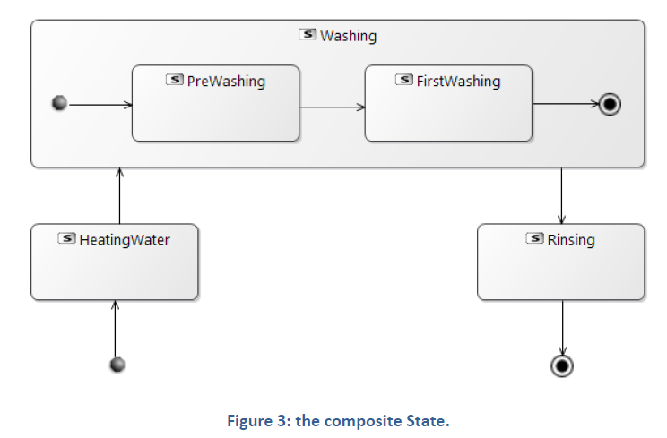
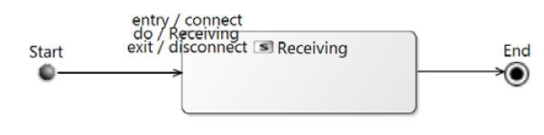
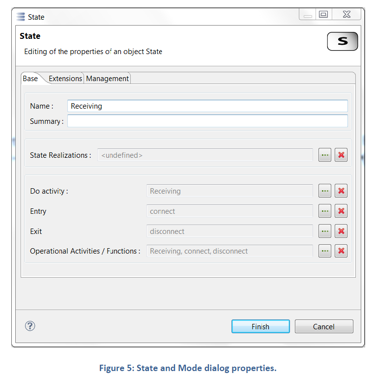
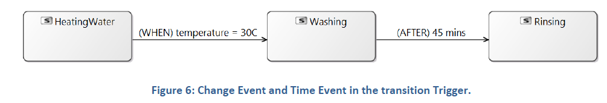
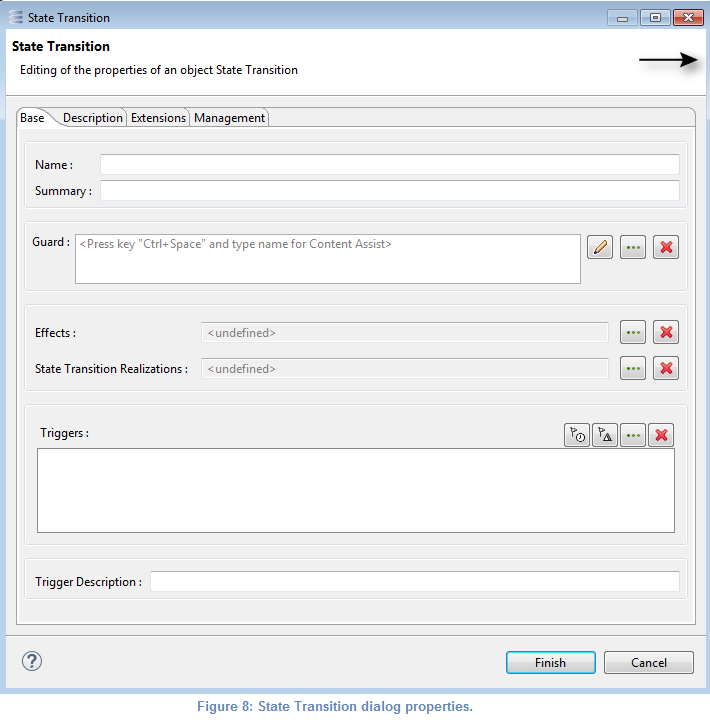
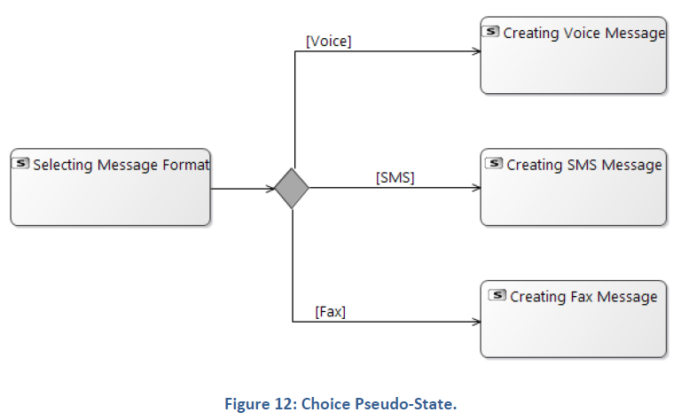
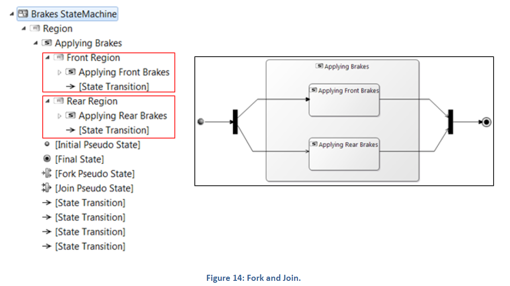

A mode or a state characterizes the (internal or external) context of an element, which determines the behavior of the element at a given time.
Many elements of the model may need modes & states definition: operational entities and actors, the system itself (most frequently), system components.

States and modes can be simple or composite.
The state “Washing” in the Figure 3 is a composite state. This state is composed by two sub states and three transitions.

It is possible to include a state into a mode and conversely a mode into a state. It is recommended to avoid this kind of composition.
A region is a top-level part of a State Machine or a composite State, which serves as a container for the States/Modes, Pseudo-States and Transitions. A State Machine or composite State may contain multiple Regions representing behaviors that may occur in parallel. The Region concept is already present in Capella M2. But it is not yet tooled in the diagrams: the content of all Regions is graphically "merged". See Figure 14.
State and mode can perform three optional actions: Entry, Do activity and Exit. The actions can be selected among operational activities/functions referenced in this Mode/State or Operations which belongs to the same layer.

The State and Mode action can be set using the dialog properties.

A Transition is a single directed relationship originating from a single source State/Mode or Pseudo-State and terminating on a single target State, Mode or Pseudo-State, which specifies a valid fragment of a State Machine Behavior. A transition may have a trigger, a guard and an effect, as below.
The Figure 6 illustrates the use of ChangeEvent and TimeEvent in state machine of a washing machine. The transition from the state ‘HeatingWater’ to the state ‘Washing’ is triggered when the water temperature is equal to 30C. The transition from the state ‘Washing’ to the state ‘Rinsing’ is triggered 45 minutes after the washing start.

The following state machine (cf. Figure 7), shows the two main states of the door lifetime “Opened” and “Closed”. If the door is in the state “Opened”, it can respond to the “CloseEvent” event if the condition “doorWay->isEmpty” is fulfilled. The transition (cf. Figure 8) from the state “Opened” to the state “Closed” defines a “Guard” and an “Effect”. The “Guard” is represented by the constraint “doorway->isEmpty” and the “Effect” is represented by the function “Close”.


In diagrams, it is possible to cross the boundaries of a composite state/mode (red transitions on the Figure 9).

A composite state may contain shallow history and deep history states.

A
Shallow history state is a reference to the most recently visited state on the same hierarchical level within the composite state.

A
Deep history state is a reference to the most recently visited simple state within the composite state.
The following diagram illustrates (cf. Figure 10) the use of the History states. The example is a state machine belonging to a washing machine.

In this state machine, when a washing machine is running in the “Running” state, it will progress from “HeatingWater” through "Washing" to "Rinsing". If there is a power cut at the state “FirstWashing”, the washing machine will stop running and will go to the "Power Off" state. Then when the power is restored, the “Running” state can entered at “Deep” or “Shallow” history state.

An
Initial Pseudo state is used to represent the initial state when entering in a mode, state or state machine.
A
Final State represents the end of a sub state or state machine.
Using Initial Pseudo State and Final simplify Mode or State reusability. Whatever the incoming transition is, the Mode or State will begin in its initial state. At the same time, whatever happens in the state the Final State allow to go out of the current state
The washing machine represented in Figure 10 illustrates perfectly those concepts. Before anything is done, the washing machine is in an “Idle” state. If the “Filing Water” is performed, the washing machine enters in the “Running” state, which begins with the “Heating Water” sub state and continues with “Washing” state. This “Washing” state begins with “PreWashing” and finish after the “FirstWashing”. Ending the “Washing” state now triggers the “Rinsing” state which ends the “Running” state to continue with “Spinning”. Then, the washing machine returns in its initial “Idle” state.
An
Entry Point is used to join an external transition terminating on that “Entry Point” to internals transitions emanating from that “Entry Point”. The “Entry Point” has at most a single transition to a State, Mode or Pseudo-State within the same region.
An
Exit Point is used to join an internal transition terminating on that “Exit Point” to an external transition emanating from that “Exit Point”.
The main purpose of such entry and exit points is to execute the state entry and exit actions respectively in between the actions that are associated with the joined transitions.
The following diagram illustrates (cf. Figure 11) the use of Entry and Exit points. The example is a state machine belonging to a drinks distributor.

A Choice pseudo-state is shown as a diamond with one incoming transition and two or more outgoing transitions. Choice is used to realize a dynamic conditional branch. It allows splitting of compound transitions into multiple alternative paths. Hence, the decision on which path to take may depend on the results of Behavior executions performed in the same compound transition prior to reaching the choice point.

Entering a Terminate Pseudo-State implies that the execution of the State Machine is terminated immediately.

A
Fork Pseudo-State serves to split an incoming transition into two or more transitions terminating on different orthogonal regions.
A
Join Pseudo- State serves to merge several transitions emanating from different orthogonal regions.

Regions concept in state machine diagrams enables to describe some concurrent behavior happening within the state machine’s owning element. The Region concept is now present in Capella and tooled in [MSM] Mode State Machine diagram.
The new [MSM] Mode State Machine diagrams replaces the old [M&S] Mode & States diagram. The following improvements have been realized:


Note: Wherefore, it is not recommended to use Fork and Join pseudo state.